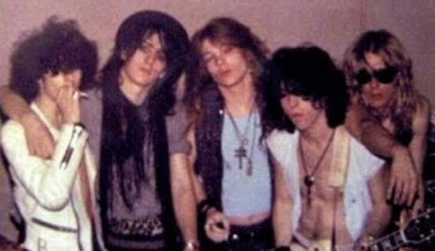
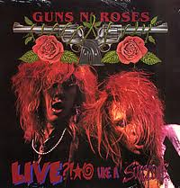
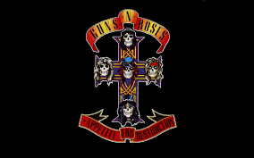

A história por trás de uma das maiores bandas da história do Hard Rock
O começo de tudo
Formada em Los Angeles, Califórnia em 1985, a banda surgiu da fusão de duas outras bandas pouco conhecidas: O Hollywood Rose, composto por Axl Rose e Izzy Stradlin (amigos de longa data) e o L.A Guns, formado por Tracii Guns, Ole Beich e Robbie Gardner. Provavelmente você conhecia apenas os membros do Hollywood Rose, não é mesmo? A formação original do que conhecemos como Guns N' Roses (aliás, esse nome surgiu surgiu dos líderes das duas bandas, ou seja, Axl Rose e Tracii Guns) veio a nascer um pouco depois. Apesar disso, essa formação não durou muito, devido a intrigas com Ole e Tracii, o que fez eles serem substítuidos rapidamente por Duff McKagan e Slash, já conhecidos de Axl. Posteriormente, Gardner também saiu da banda, sendo seu posto assumido pelo baterista Steven Adler (conhecido de Slash). Com essa série de acontecimentos, se formou a chamada formação clássica do Guns N' Roses, a qual se manteve até pouco antes das gravações para o terceiro e quarto lançamento de estúdio, o Use Your Illusion 1 e o seu irmão Use Your Illusion 2, lançados em 1991.

Primeiros passos
Já com a formação clássica consolidada, o primeiro show deles juntos foi feito no dia 6 de Junho de 1986, no Troubador, em Hollywood, local muito importante para a história da banda e onde eles voltaram a realizar shows outras vezes no futuro. Nesse mesmo ano, eles fizeram a primeira gravação de estúdio da banda, o EP ( podemos definir como sendo um estágio entre um single e um álbum devido a quantidade de faixas) Live ?!*@ Like a Suicide, lançado de forma independente pela banda em dezembro do mesmo ano. Esse EP continha dois covers (músicas gravadas originalmente por outras bandas) e duas inéditas, sendo elas respectivamente: Nice Boys (do Rose Tattoo), Mama Kin (do Aerosmith), Reckless Life e Move to the City. Interessante notar que as todas as músicas desse EP foram relançadas posteriormente no EP GN'R Lies. Porém, esse lançamento não fez muito sucesso como os próximos lançamentos, mas foi suficiente para chamar a atenção da gravadora Geffen Records, que assinou com a banda no mesmo ano. Mesmo com esse contrato, a vida da banda não foi fácil, já que a busca de um produtor para o álbum foi extensa e demorada, tendo sido testado até mesmo Paul Stanley, o vocalista da lendária banda Kiss, mas a parceira não foi para frente. Foi aí que entrou Mike Clink, produtor que assumiu a missão de produzir o primeiro grande lançamento do Guns N' Roses: Appetite for Destruction.

O álbum que definiu o Guns: Appetite for Destruction
Pelos meados dos anos de 1986 e 87, o Guns estava preparando o lançamento do Appetite, mas esse período, como quase todos dessa banda, sempre esteve envolto por polêmicas e confusões. Todos os membros da banda tinham um certo grau de problemas com bebidas e mulheres, sendo os mais afetados o Slash e o Steven. Nessa época, eles já eram conhecidos pela cidade pelos seus shows explosivos e suas polêmicas, ganhando um apelido que acompanharia a banda por muito tempo: a banda mais perigosa do mundo. Com todo esse caos em volta, o sucesso do álbum em produção definiria o futuro da banda. Provavelmente, se o Appetite fosse mal, a Geffen não iria manter contrato com o Guns, justamente pelos comportamentos explosivos da banda, em especial do frontman Axl Rose. Apesar de tudo isso, o talento da banda era inegável, com a crescente de público a cada show, no dia 21 de Julho de 1987, o Appetite for Destruction finalmente é lançado, composto de 12 faixas originais. Mesmo assim, o álbum inicialmente não foi um sucesso de cara o que preocupou muito a banda e a gravadora num primeiro momento. Os dois primeiros singles lançados foram Welcome to the Jungle e It's So Easy, ficando na posição 182 da Billboard 200 (revista referência global no âmbito musical). Dessa forma, a Geffen pressionou a MTV a passar o clipe de Welcome To The Jungle (o clipe e a letra não eram considerados apropriados para passar na programação diária da emissora). Por causa disso e pela qualidade da música, o vídeo se tornou o mais pedido da emissora pelos telespectadores, o que finalmente alavancou as vendas e o sucesso do álbum, ganhando, em abril de 1988, o disco de platina nos EUA. Agora, a Geffen e a banda queriam expandir o seu sucesso, e a escolhida para elevar ao topo das paradas não podia ser outra: Sweet Child O' Mine.

A música que alavancou o Guns: Sweet Child O' Mine
A história por trás dessa música e o seu sucesso mereciam apenas um artigo a parte. Escrita por Axl Rose, a música foi feita para a sua namorada na época, Erin Everly. O processo de composição musical da música foi ocorrendo naturalmente, como boa parte das músicas da banda. Os solos de guitarras foram feitos pelo Slash em um momento de prática que surgiu o icônico riff dos anos 80. Apesar disso, Slash não era muito com a cara da música, pois considerava ele uma balada meio batida, o que não é do gosto dele, preferindo rocks mais elétricos e impulsos como Welcome To The Jungle, It's So Easy e entre outras. Porém, como Axl gostava muito dela junto com outros membros, ele acabou colaborando para a criação desse clássico. Outro fato curioso da criação dessa música era que Axl não sabia como terminar a música, e certa demo da música, ele ficou repetindo e se perguntado: " Where do you go now" (Para onde vamos agora?). Por fim, esse momento de dúvida e incerteza se tornou a finalização perfeita para uma música que marcou gerações. Desse modo, com o lançamento da música em formato de single, o sucesso foi imediato, com o videoclipe sendo um dos mais pedidos da MTV, mostrando os membros da banda e suas respectivas namoradas. Esse monstruoso single levou a banda para as paradas da Billboard, sendo até hoje a música mais conhecida e lembrada quando falamos de Guns N'Roses. Por fim, ela também foi responsável por alavancar outras músicas, como o single de Paradise City.